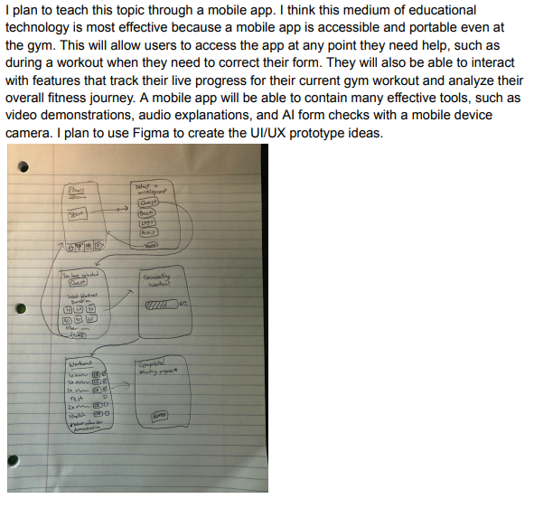

Group Project: Anki Prior Knowledge Enhancements
View the full presentation:
Google Slides Link
Highlights:
Anki excels at repetition and active recall, but it fails to capture prior knowledge.
This can lead to poor learning cycles and inaccurate learning personalization.
Features to Optimize Learning:
- Self-Input Survey: Users share study goals, weak topics, and resources. Helps Anki build a prior knowledge understanding.
- Pre-Assessment Quiz: Questions to gauge strengths and weaknesses. Can create personalized flashcard decks.
- Knowledge-Recall Challenge: Open-ended input to reveal misconceptions and promote metacognition.
- Mind Map Generator: Visualization of topic understanding to better tailor flashcards.
Learning Frameworks:
- Based on constructivist and sociocultural theories.
- Leverages metacognitive reflection, situated cognition, and Bloom’s taxonomy.
- Prior knowledge activation enhances engagement and retention.
Workout Guide Project
Initial Sketches

Prototype-1
Repository link:
GitHub - Prototype 1
User Testing Feedback from Rohan, Alex, Justin:
- Make the UI more appealing and user friendly
- Add option to create custom exercises
- Make exercises editable and deletable
- Make created workouts visible and selectable
- Add difficulty rating for each exercise
- More detailed workout statistics
- Calendar view of workout history
- Interactive charts and graphs
- Compare with previous weeks/months
Final Prototype-2
Repository link:
GitHub - Prototype 2